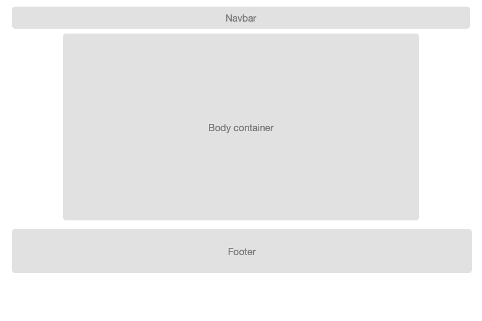

Body layout is composed only header (navbar), body and footer. You can play only with the body content. The content is put as is, Reflow maven skin should not modify this content. Let’s be free in your inspiration to create a attractive home page.

support v2.3 new
element reflow element
To declare a page as body layout, create an page (index.html in example below) and set type attribute with value body.
<pages>
...
<index type="body" project="project-id">
</index>
...
</pages>